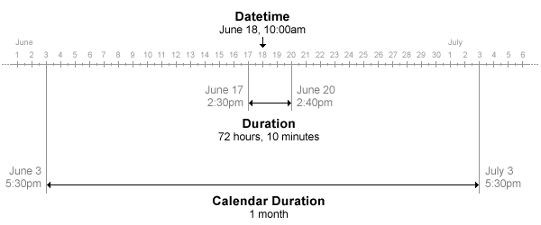

duration
Lengths of time in fixed-length units
Description
The values in a duration array represent elapsed times in units of fixed length, such as hours, minutes, and seconds. You also can create elapsed times in terms of fixed-length (24-hour) days and fixed-length (365.2425-day) years.
Work with duration arrays as you would work with numeric arrays. You can add, subtract, sort, compare, concatenate, and plot duration arrays. Use duration arrays to simplify calculations on datetime arrays that involve time units such as hours and minutes.

Creation
You can create duration arrays that have specified time units using the years, days, hours, minutes, seconds, and milliseconds functions. For example, to
create an array that has elapsed times of 1, 2, and 3 hours, use the
hours function.
D = hours(1:3)
D = 1×3 duration array 1 hr 2 hr 3 hr
You also can create a duration array using the duration function,
described below.
Syntax
Description
D = duration( creates a
duration array from numeric arrays containing the number of hours, minutes,
and seconds specified by H,MI,S)H, MI, and
S.
D = duration(H,MI,S, adds
milliseconds to the duration array, specified by
MS)MS.
D = duration(
converts text that represents elapsed times into a duration array.
TimeStrings)TimeStrings must represent times using either the
'hh:mm:ss' or the 'dd:hh:mm:ss'
format.
D = duration(
converts text using the format specified by TimeStrings,'InputFormat',infmt)infmt.
D = duration(___,'Format',displayFormat)
additionally specifies a display format for D. This
property changes the display of D, but not its values.
You can use this syntax with any of the arguments from the previous
syntaxes.
Input Arguments
Properties
Examples
Tips
For more information on functions that accept or return duration arrays, see Dates and Time.
To convert duration arrays to numeric arrays, use the
years,days,hours,minutes,seconds, andmillisecondsfunctions. When the input argument is a duration array, these functions return numeric arrays that represent the number of years, days, hours, minutes, seconds, or milliseconds that were stored in the duration array.
Extended Capabilities
Version History
Introduced in R2014b